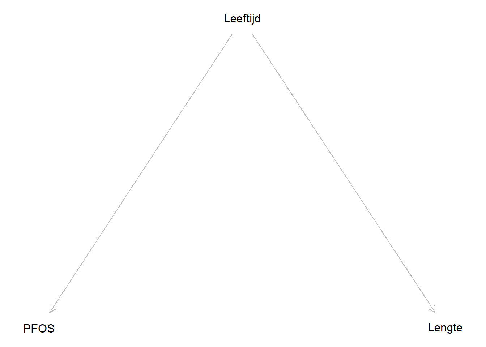
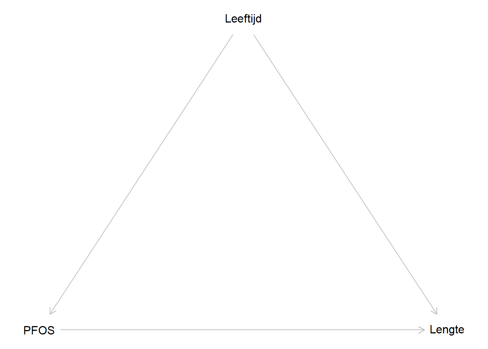

3 Causaliteit
In voorgaande sectie waren we geïnteresseerd in het verband tussen de PFOS-concentratie en de lichaamslengte. Een belangrijk aspect van epidemiologie en dus ook statistiek draait rond het toewerken naar wat men een causaal verband noemt.
Naar het project toe is het voornamelijk belangerijk om na te denken over het aspect van confounding, maar het is goed om ook de bredere context van causaliteit te begrijpen.
3.1 Associatie versus causatie
Je hebt ongetwijfeld al wel eens gehoord: “Associatie is niet causatie”. Een statistisch significant verband tussen twee variabelen (\(p<0.05\)) zegt op zichzelf niets over het mechanisme van dat verband. Stel dat we in het dataset een significant negatief verband vinden tussen PFOS-concentratie en lichaamslengte: betekent dit dat PFOS de groei van kinderen afremt? Of zou een derde factor (bijvoorbeeld leeftijd, voedingspatroon, socio-economische status) zowel de PFOS-blootstelling als de lichaamslengte kunnen beïnvloeden, zonder dat er een rechtstreeks causaal effect bestaat?
Het punt is: een associatie in de data leert ons op zichzelf niet welke van deze verklaringen correct is, daarvoor is extra kennis nodig of een speciaal opgezette studie.
3.1.1 Experimentele versus observationele studies
Algemeen gezien zijn er twee type studies: experimentele en observationele studies.
In een experimentele studie bepaalt de onderzoeker, via randomisatie, welke proefpersoon welke blootstelling krijgt. Denk hierbij aan een mundstuk dat bepaalt wie blootgesteld and wie niet blootgesteld wordt aan PFOS. Omdat het toeval dit bepaalt, kan geen enkel kenmerk (zoals leeftijd, geslacht, socio-economische status) van de proefpersoon systematisch samenhangen met de toegewezen blootstelling.
In een observationele studie, zoals onze PFOS-studie, heeft de onderzoeker geen controle over wie welke blootstelling krijgt. PFOS-concentratie en lichaamslengte worden samen geobserveerd, zoals ze zich in de realiteit voordoen.
Aangezien niemand kinderen willekeurig aan verschillende PFOS-blootstellingsniveaus kan toewijzen (om evidente ethische redenen), is de PFOS-studie noodzakelijk een observationele studie. Dit maakt dat we typisch gezien voorzichtig moeten zijn met een associatie een causatie te noemen.
3.1.2 De Bradford Hill-criteria
De vraag “Wat is bewijs?” kent een hele historie. Een van de belangrijkste referentiekaders zijn de criteria van Bradford Hill (1965). Dit zijn geen strikt statistische toetsen, maar een reeks overwegingen die samen de plausibiliteit van een causaal verband ondersteunen. Geen enkel criterium is op zich noodzakelijk of voldoende, maar hoe meer ervan vervuld zijn, hoe overtuigender het bewijs.
| Criterium | Betekenis | PFOS en lichaamslengte |
|---|---|---|
| Temporality | De oorzaak moet aan het gevolg voorafgaan in tijd. | PFOS-blootstelling moet vóór (of tijdens) de groeiperiode plaatsvinden, niet erna. |
| Consistency | Hetzelfde effect wordt teruggevonden in verschillende groepen (andere populaties, landen, geslachten). | Wordt een negatief verband tussen PFOS en lengte ook in andere cohorten en landen teruggevonden? |
| Coherence | Verschillende studietypes leiden tot gelijkaardige conclusies. | Komen observationele humane studies en dierstudies tot dezelfde conclusie over PFOS en groei? |
| Strength of association | Hoe sterker het effect, hoe plausibeler de causaliteit. | Een groot geschat effect van PFOS op lengte is minder snel volledig te verklaren door toeval. |
| Biological gradient | Hoe hoger de blootstelling, hoe hoger het risico (dosis-responsrelatie). | Is er een duidelijke trend: hoe hoger de PFOS-concentratie, hoe kleiner de lichaamslengte? |
| Specificity | De blootstelling leidt tot een specifiek effect. | Heeft PFOS specifiek een effect op groei, of op verschillende aspecten? |
| Plausibility | Er is een biologisch aannemelijk mechanisme. | Is er een gekend metabool mechanisme waarlangs PFOS de groei zou kunnen beïnvloeden? |
| Freedom from confounding en bias | Het verband houdt stand na correctie voor gekende confounders en andere vertekeningsbronnen. | Blijft het PFOS-effect overeind na correctie voor leeftijd, geslacht, socio-economische status, enz.? |
| Analogy | Gelijkaardige blootstellingen leiden tot gelijkaardige effecten. | Vertonen chemisch verwante PFAS-stoffen een gelijkaardig effect op groei? |
Voor het project moet al deze criteria uiteraard niet nagaan, maar is het goed om deze in je achterhoofd te houden. Het volstaat om de grootste focus op confounding te leggen.
3.2 Confounding
3.2.1 Causale diagrammen
Beschouw opnieuw het PFOS-voorbeeld. Stel dat we bij kinderen zowel de PFOS-concentratie in het bloed als de lichaamslengte meten. In dit geval treedt leeftijd hier als confounder op:
Oudere kinderen hebben doorgaans hogere PFOS-concentraties in het bloed, simpelweg omdat PFOS-stoffen zich in het lichaam opstapelen naarmate de blootstellingsduur toeneemt. Leeftijd hangt dus samen met PFOS-concentratie.
Oudere kinderen zijn ook gewoonweg langer, los van enige blootstelling. Leeftijd hangt dus ook samen met lichaamslengte.
Deze twee samenhangen zorgen ervoor dat, als je leeftijd niet in de statistische analyse opneemt, je een vertekend beeld krijgt van het effect van PFOS op lengte. In termen van causale diagrammen (DAG’s) ziet dit er als volgt uit:
Code


Deze twee diagrammen of DAG’s (directed acyclic graphs) stellen twee mogelijke causale structuren voor, gebaseerd op voorkennis en logisch redeneren, niet afgeleid uit de data zelf:
In het linkse diagram is er geen rechtstreekse pijl van
PFOSnaarLengte: alle samenhang tussen beide variabelen loopt viaLeeftijd. Zodra je conditioneert op leeftijd, verdwijnt de samenhang tussen PFOS en lengte volledig.In het rechtse diagram is er wél een rechtstreekse pijl
PFOS -> Lengte, naast de indirecte weg viaLeeftijd. Hier blijft er, ook na conditioneren op leeftijd, een rechtstreeks effect van PFOS op lengte over.
Een pijl in zo’n diagram betekent: als je de variabele aan de staart van de pijl laat variëren, dan verandert de variabele aan de kop van de pijl mee. Het ontbreken van een pijl tussen twee variabelen is een sterke uitspraak: het zegt dat die twee variabelen conditioneel onafhankelijk zijn, gegeven de gemeenschappelijke oorzaak (hier Leeftijd).
3.2.2 Stratificatie
Het idee achter stratificatie is eenvoudig: als leeftijd de volledige verklaring is voor het verband tussen PFOS en lengte (diagram (a)), dan zou dat verband moeten verdwijnen zodra je enkel kinderen van (ongeveer) dezelfde leeftijd met elkaar vergelijkt. Blijft er daarentegen, ook binnen een kleine leeftijdsgroep, nog steeds een duidelijk verband over tussen PFOS en lengte, dan wijst dat eerder op diagram (b), met een rechtstreeks effect van PFOS.
In de praktijk kunnen we leeftijd niet exact vasthouden, daarvoor zijn er te weinig kinderen per exacte leeftijd. In plaats daarvan verdelen we de steekproef in een beperkt aantal leeftijdsgroepen, en bekijken we per groep het verband tussen PFOS en lengte afzonderlijk.
Welke toets je binnen elke groep gebruikt, hangt af van hoe PFOS gemeten is:
Is PFOS continu (zoals hierboven), dan bekijk je de correlatie (of een eenvoudige regressie) tussen PFOS en lengte binnen elke leeftijdsgroep.
Is PFOS herleid tot een binaire blootstelling (bijvoorbeeld “hoge” versus “lage” PFOS-concentratie, ingedeeld op basis van een afkapwaarde), dan kan je binnen elke leeftijdsgroep een t-test gebruiken om de gemiddelde lengte tussen beide PFOS-groepen te vergelijken.
Stratificatie heeft wel twee nadelen:
je verliest steekproefgrootte binnen elke groep, waardoor de schattingen minder precies worden
ze werkt enkel goed voor één (of hoogstens een klein aantal) confounder(s) tegelijk. Met meerdere continue confounders wordt het aantal strata al snel groot. Daarom wordt in de praktijk meestal de regressie-aanpak verkozen.
3.2.3 Regressie als alternatief voor stratificatie
Stratificatie in leeftijdsgroepen is nuttig om het confoundingprincipe te illustreren, maar in de praktijk werkt men liever met een regressiemodel waarin leeftijd als continue regressor wordt opgenomen. Dit vermijdt het verlies aan steekproefgrootte en laat toe om, indien nodig, meteen voor meerdere confounders tegelijk te corrigeren.
Het basismodel ziet er dan als volgt uit:
\[ \text{lengte} = \beta_0 + \beta_1 \cdot \text{PFOS} + \beta_2 \cdot \text{leeftijd} + \varepsilon \]
De interpretatie van \(\beta_1\) is hier belangerijk: dit is het verband tussen PFOS en lengte bij eenzelfde leeftijd. De regressiecoëfficiënt voor PFOS, \(\beta_1\), geeft het verwachte verschil in lengte weer dat geassocieerd is met een hogere PFOS-concentratie, voor kinderen van dezelfde leeftijd. Dit komt inhoudelijk overeen met wat stratificatie deed (binnen elke leeftijdsgroep het verband bekijken), maar dan in één keer voor de volledige steekproef, en met een continue in plaats van een gecategoriseerde leeftijd.
- Blijkt \(\beta_1\) ongeveer nul (en niet langer significant) zodra leeftijd in het model zit, terwijl het verband zonder correctie wél sterk was, dan wijst dat op
diagram (a): leeftijd verklaart het (schijnbare) verband tussen PFOS en lengte volledig. - Blijft \(\beta_1\) daarentegen duidelijk verschillend van nul, ook na correctie voor leeftijd, dan wijst dat op
diagram (b): er is aanwijzing voor een rechtstreeks effect van PFOS op lengte.